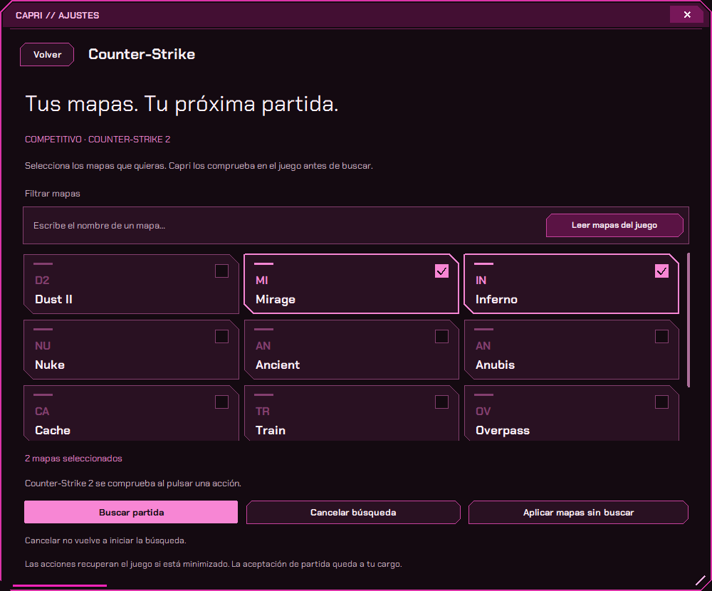

06
COUNTER-STRIKE 2
TUS MAPAS.
A TU MANERA.
Guarda tu selección y aplícala
antes de buscar en Competitivo.

Leer mapas · Aplicar sin buscar · Cancelar la cola
PRUEBA ESTA FRASECapri, aplica mis mapas en CS2.
Integración en pruebas · Aceptas tú la partida